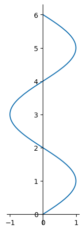
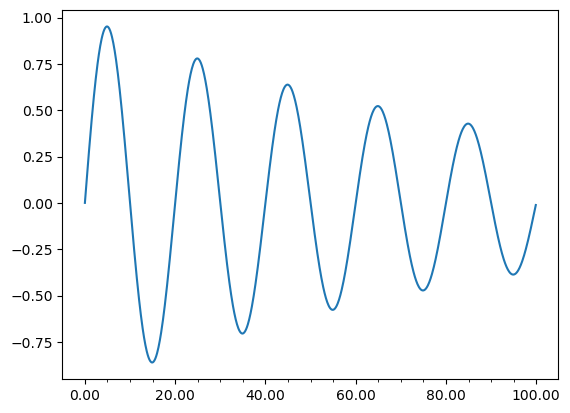

##You may need to run the following for animations:
# !pip install ipympl
## If you're using jupyter lab2
# !pip install nodejs-bin
# !jupyter labextension install @jupyter-widgets/jupyterlab-manager
# !jupyter labextension install jupyter-matplotlibSetup
%matplotlib ipymplimport pandas as pd
import numpy as np
import sympy as sp
import matplotlib.pyplot as plt
from sympy import plot_parametric, symbols, cos, sin
from sympy import symbols
pd.set_option('display.precision', 2)Parametric Curves
If x and y are given as functions: \[ x = ƒ(t), y = g(t) \] over an interval \(I\) of \(t\)-values, then the set of points \((x, y) = (ƒ(t), g(t))\) defined by these equations is a parametric curve. The equations are parametric equations for the curve.

Examples
Example 1: \(\quad x = sin(\pi t/2),\quad y=t, \quad 0\leq t\leq 6\)
t = symbols('t')
x = sin(sp.pi * t/2)
y = t
p = plot_parametric((x, y), (t, 0, 6), show = False)
p.aspect_ratio=(1,1)
p.show()
# Generate the table for specific values of t
def evaluate(x, s, values):
"""
Evaluate x on s, for num_values (given as a list) and return the result
"""
return [round(float(x.evalf(subs={s: val})), 2) for val in values]
values = evaluate(t, t, list(range(7)))
x_values = evaluate(x, t, values)
y_values = evaluate(x, t, values)
# Create a pandas DataFrame
data = {
't': t_values,
'x': x_values,
'y': y_values
}
df = pd.DataFrame(data)
display(df)| t | x | y | |
|---|---|---|---|
| 0 | 0 | 0.0 | 0.0 |
| 1 | 1 | 1.0 | 1.0 |
| 2 | 2 | 0.0 | 0.0 |
| 3 | 3 | -1.0 | -1.0 |
| 4 | 4 | -0.0 | -0.0 |
| 5 | 5 | 1.0 | 1.0 |
| 6 | 6 | 0.0 | 0.0 |
## Using numpy
t = np.linspace(0,6,7)
x = np.sin(np.pi*t/2)
y = t
pd.DataFrame([t,x,y]).T
plt.plot(x,y)
plt.gca().set_aspect('equal')Example 2
Example 3
You may have seen the following equation. What does it represent? \[ y = ax - bx^2 \]
Where \(a\) and \(b\) are some constants.
Now this equation can be parametrized into two equations as follows: \[ x = ut, \qquad y = vt + w t^2 \] Where \(u\), \(v\), and \(w\) are constants related to \(a\) and \(b\). What are these equations showing?
x, y, t = Symbol('x y t')
u, v, w = Symbol('u v w')
x = u*t
y = v * t + w t^2
p = plot_parametric((x, y), (t, 0, 6), show = False)Example: Slider
Example 3: Animate
### Example Animate
import matplotlib.pyplot as plt
import numpy as np
import matplotlib.animation as animation
fig, ax = plt.subplots()
t = np.linspace(0, 3, 40)
g = -9.81
v0 = 12
z = g * t**2 / 2 + v0 * t
v02 = 5
z2 = g * t**2 / 2 + v02 * t
scat = ax.scatter(t[0], z[0], c="b", s=5, label=f'v0 = {v0} m/s')
line2 = ax.plot(t[0], z2[0], label=f'v0 = {v02} m/s')[0]
ax.set(xlim=[0, 3], ylim=[-4, 10], xlabel='Time [s]', ylabel='Z [m]')
ax.legend()
def update(frame):
# for each frame, update the data stored on each artist.
x = t[:frame]
y = z[:frame]
# update the scatter plot:
data = np.stack([x, y]).T
scat.set_offsets(data)
# update the line plot:
line2.set_xdata(t[:frame])
line2.set_ydata(z2[:frame])
return (scat, line2)
ani = animation.FuncAnimation(fig=fig, func=update, frames=40, interval=20)
plt.show()plt.close()Getting creative
!jt -t chesterish!jt -rReset css and font defaults in:
/home/fes33/.jupyter/custom &
/home/fes33/.local/share/jupyter/nbextensions!jt -lAvailable Themes:
chesterish
grade3
gruvboxd
gruvboxl
monokai
oceans16
onedork
solarizedd
solarizedlimport matplotlib.pyplot as pltplt.plot()[]
data = np.random.rand(180,1)
nbnd = data.shape[0]
lenk = int(data.shape[0] / nbnd)
lenk1data.shape[0] / 335.454545454545454import matplotlib.pyplot as plt
import numpy as np
from matplotlib.ticker import (MultipleLocator, AutoMinorLocator)
t = np.arange(0.0, 100.0, 0.1)
s = np.sin(0.1 * np.pi * t) * np.exp(-t * 0.01)
fig, ax = plt.subplots()
ax.plot(t, s)
# Make a plot with major ticks that are multiples of 20 and minor ticks that
# are multiples of 5. Label major ticks with '.0f' formatting but don't label
# minor ticks. The string is used directly, the `StrMethodFormatter` is
# created automatically.
ax.xaxis.set_major_locator(MultipleLocator(20))
ax.xaxis.set_major_formatter('{x:.2f}')
# For the minor ticks, use no labels; default NullFormatter.
ax.xaxis.set_minor_locator(MultipleLocator(5))
plt.show()